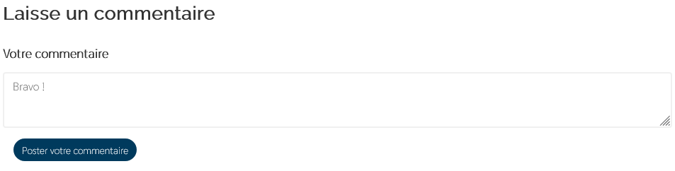

Projet : Template de Blog
Information du projet
- Category: Site internet
- Project date: Avril, 2021
- Github : Blog Github
Description
Template pour créer un blog avec des articles, des commentaires et des photos. Créer pour les équipes compagnon Scouts et Guides de France.
La Maintenance effectuée
Durant cette maintenance plusieurs modifications ont été apportées :
1 ) Sécurisation des images
Par défaut, les images mises en ligne avec le blog ne sont plus dans le dossier public. Par conséquent l'accès direct aux images n'est plus possible. Une route d'accès aux images a été créée. Pour récupérer l'image, il faut être connecté au site.
2 ) Ajout d'un code d'accès
Pour créer un compte, l'utilisateur doit rentrer un code d'accès correct.
Les administrateurs du site internet peuvent créer des codes d'accès dans les pages d'administration du site
Ce code sera utilisé pour la création d'un compte.
3 ) Inscription
Pour pouvoir consulter le site internet, les utilisateurs doivent être obligatoirement authentifiés.
Pour créer un compte, l'utilisateur doit avec un code d'accès créer par un administrateur.
4) Ajout d'un formulaire de connexion
Une fois le compte créé, l'utilisateur peut se connecter au site.
5) Création d'un commentaire
L'utilisateur à la possibilité de commenter un article. Le commentaire sera automatiquement lié au compte utilisateur.
Veille Technologique
Pour ce site internet j'ai utilisé le framework Symfony.
Symfony est un framework qui permet de développer une application web en nous concentrant sur les fonctionnalités principales de notre application, de plus Symfony nous impose une architecture MVC.